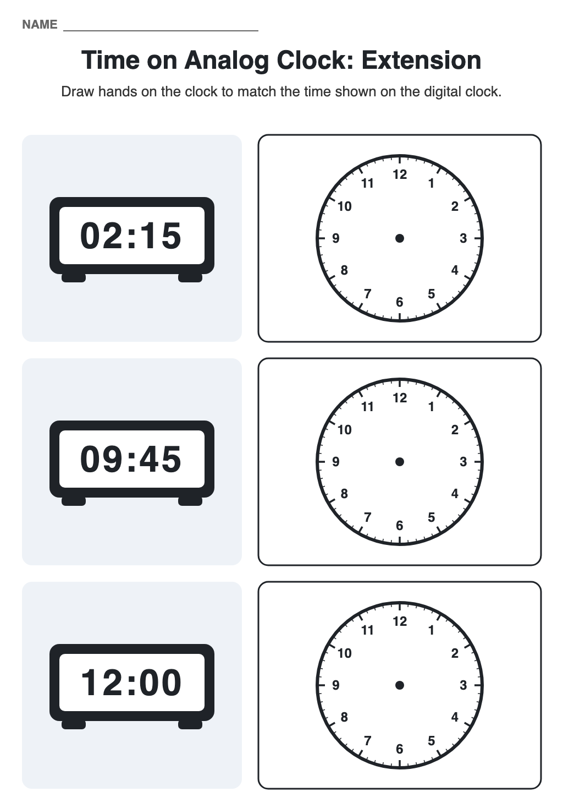
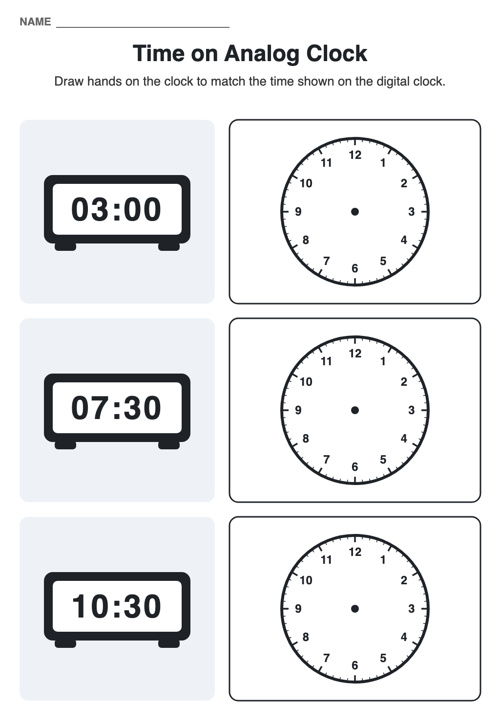

Going from Digital to Analog
A printable worksheet for Year 2 students to practise reading a digital clock and drawing the matching hands on an analog clock.
Objective: Reading o'clock and half past on a digital clock and showing the same time by drawing the hour and minute hands on an analog clock
-
Worksheet

Three digital clocks showing o'clock and half past times. For each one, students draw the hour hand and the minute hand on the blank analog clock.
Download worksheet -
How to use it
- Do the first clock together. Point out that the minute hand goes to the 12 for o'clock and the 6 for half past.
- Remind students to draw the hour hand shorter than the minute hand, and to put it halfway between the two numbers for half past.
- Students complete the rest on their own, then swap with a partner to check.
This is the reverse of Going from Analog to Digital. Doing both directions helps the mapping stick.
-
Extension

A second sheet that moves on to quarter past and quarter to, plus 12 o'clock where both hands sit on the 12. For quarter to 10, watch for students who draw the hour hand on the 10 instead of just before it.
Download extension -
Worksheet, redrawn

The same worksheet redrawn to match the extension sheet, so the two print as a matching pair.
Download redrawn worksheet
{kind=link}
{kind=link}